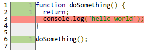
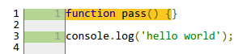
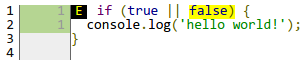
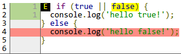

What is code coverage?
“In computer science, code coverage is a measure used to describe the degree to which the source code of a program is tested by a particular test suite.” — Wikipedia
Code coverage describes the degree to which your automated tests actually test your source code.
Code coverage: in practice
Run my code and measure which parts were utilized.
From the perspective of a code coverage tool, code coverage means: run my code and record which parts of the code were used.
Popular Coverage Metrics
Statement coverage or line coverage
Function coverage
Branch coverage
Statement coverage tells you which code statements were executed.
Line coverage tells you which lines of code were reached.
Function coverage tells you which functions were called.
Branch coverage tells you which code branches were entered.
Statement coverage
function doSomething() {
return;
console.log('hello world');
}
doSomething();
Any guesses as to what the statement coverage looks like for this example?
Statement coverage

Statements covered: 75% ( 3 / 4 )
1 of 4 statements unexecuted
Function coverage
function pass() {}
console.log('hello world');
Any guesses as to what the function coverage looks like for this example?
Function coverage

Functions covered: 0% ( 0 / 1 )
We have 1 function and it was never executed.
Note that our statement coverage was perfect. Every statement was executed.
Branch coverage
if (true || false) {
console.log('hello world!');
}
Any guesses about the branch coverage here?
Branch coverage

Branches covered: 50% ( 2 / 4 )
We have 4 branches and 2 of them were never executed.
Which 2 branches were missed?
Answer:
- the highlighted "false" means the OR branch of our "if" statement was never executed
- that little "E" means the "false" branch of our "if" statement was never executed
Branch coverage

Branches covered: 50% ( 2 / 4 )
The missing "if" statement coverage is more obvious if we add an "else" statement.
What is it good for?
100% coverage is not an indicator of good tests
< 100% coverage tells us we missed something
Code coverage is a metric. Metrics are useless unless we understand their purpose.
In the game of code coverage, 100% is the magic number. If our tests execute every edge of our code, they will have 100% coverage.
However, 100% code coverage does not mean our tests are comprehensive or well-written. Code coverage says nothing about our test assertions and it does not measure the interdependence of code branches.
JS Code Coverage Tools
There are three popular JS code coverage tools.
Istanbul is the big name in this space right now. QUnit uses Istanbul.
Istanbul needs to modify your code before running it so you'll need Node.js installed to run your tests.
Blanket.js can be run through Node or included directly in your web browser.
JSCover requires Java and I have never used it.
Gamifying Coverage
Continuous Integration: did my tests break?
Coverage reporting: did my code coverage decrease?
Just as continuous integration services notify you when you break your tests, code coverage reporting services notify you when your code coverage decreases.
Code coverage reporting services integrate into your continuous integration testing services (if you're already writing automated tests and using CI).
Code Coverage Reporting
Coveralls : popular and widely usedCodecov : supports branch coverage and partial line coverage
Coveralls is the current big fish in this space. As far as I know, they were the first SaaS code coverage product. Codecov is the new kid on the block.
Unlike Coveralls, Codecov supports both branch coverage and statement coverage. I found Codecov last year while looking for a solution to Coveralls' lacking support for branch coverage.
Both are free for open source projects. For private repositories, Coveralls is $5 per repo and Codecov is $5 for all repos.
The wonderful folks at Codecov have provided me with a coupon code which gives you one month of free access for all your private repositories.
The coupon code is the same my Twitter handle (which is my name), You'll see my handle again at the end of this talk.